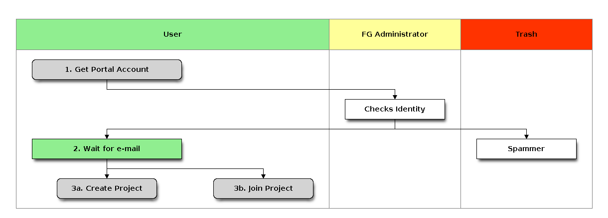
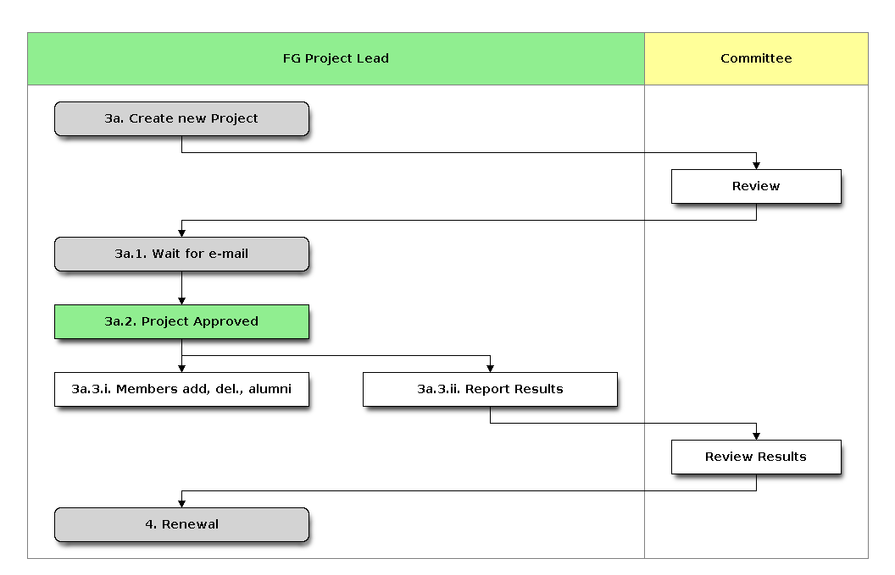
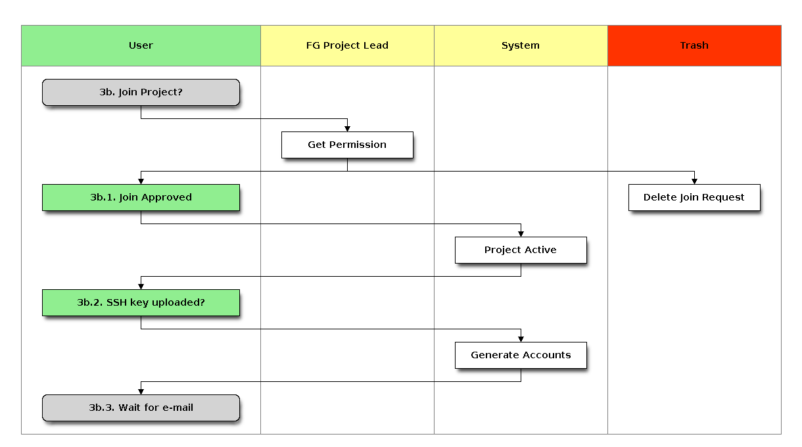

1. Project and Account Management¶
It is very easy to obtain a project and accounts on FutureGrid. While it is possible to just execute the three steps in our quickstart guide, we have provided a more in-depth description based on user feedback. You have certain responsibilities including managing project memberships and reporting results that must be conducted while you use FutureGrid, thus it is a good idea to read this section carefully. At the end of the section we also provide a mini-FAQ of information that may be of help for issues you may have overlooked or that have not yet been answered. Some screencasts about this topic are available in section Screencast: Account and Project Management.
1.1. Terminology¶
- Portal Account:
- A portal account is necessary to communicate information about yourself to the FutureGrid team so they can verify that you exist and you are a community member with a need to use FutureGrid. Once you have a portal account approved you can apply for a project.
- Resource Account:
- A portal account will not give you access to the FutureGrid resources. You will have to go to the portal and join a project, or create a new one.
- Valid Project:
- At least one project you belong to must be valid. A valid project is one that is approved by a committee. If you are not in a valid, active project your access to FutureGrid will be blocked. Projects that do not report any progress will be blocked after a while. Note that you agree to update us with regular results reported via the portal as part of your agreement to use FutureGrid.
- Uploaded SSH Key:
- As you are using remote compute resources we will require that you are very familiar with ssh key management. You will need to upload a public ssh key to the portal so we can create you an account and use that public ssh key to allow you to log in to the resources.
1.2. Quickstart¶
If you have not created a project on FutureGrid before we recommend that you do not use the quickstart guide and instead read the full documentation. To remind you what you have to do here are a couple steps that you need to do:
For non XSEDE users:
- Create a Portal account and wait for confirmation via e-mail
- Join a project or create a new project and wait for confirmation. Note that you must communicate with the project lead first before you can join a project.
For XSEDE users:
- Please go to the XSEDE portal and apply for an XSEDE portal account.
- Create a new project as documented in the XSEDE portal allocations page or ask you XSEDE project lead to join you to the project.
- It will take some time to get your account activated
1.3. Projects and Accounts for XSEDE users¶
Todo
Gregor writes this section
1.4. Project Management¶
1.4.1. Create a Portal account¶
In order to utilize any FutureGrid resource, you must possess a FutureGrid portal account. Thus, apply for your portal account before you attempt anything else. This account is used to gather some information that we will use in the next steps. You must make sure that the information is complete before you proceed to the second step. FutureGrid performs basic verification of the information you provide when creating an account, so it may take a little while before your account is approved. Once you have a portal account, please proceed.
Please note that you cannot access FutureGrid resources until you complete the next steps.
 Hint
Hint
It may take a day or two to get a portal account. Portal accounts will not be created over the weekend.
Here are a few tips that make it easy for you
- On the portal’s main page at https://portal.futuregrid.org appears a Portal ‣ Register link.
- Following you will be able to Create a new account on the portal.
- Fill in ALL fields as much as you can.
- Note that fields with * are mandatory
- It is important that you specify your address information completely.
- If you are a graduate or undergraduate student please fill out your advisor’s contact information in the field specially dedicated for it. If he has a FutureGrid Portal name, please also add his portal name if you know it in that field.
- If you have an e-mail address from your institution, we ask that you use this address instead of one from gmail, hotmail, or other e-mail services that we cannot trace back to your name or institution.
- Usage of all non institutional addresses will prolong the application process.
- Please note that creating a portal account does not give you access to any FutureGrid resources.
- Please remember that checking your information will take time. Thus we recommend that you wait till you get a message that tells you that your portal account has been approved. Then continue to The next step. We are not conducting any portal approval outside of 10am-4pm EST. If there are no problems verifying your information your approval will take 1-2 days; if we have problems verifying your data or something else is not right your approval will be delayed. If you appear to be a spammer we will not notify you.
- If you are teaching a class class we have some special instructions for you in Section s-account-class.
- After your account has been approved, you can correct the information as part of the portal account User Profile Management.

| Name | Description |
|---|---|
|
Apply for a portal account at https://portal.futuregrid.org/user/register |
| Checks Identity | Administrator checks the data submitted. |
| Spammer | Spammers will be deleted without notification. |
|
Wait for the e-mail that approves your portal account. If you have not heard from us within 2 buisiness days use the help form on the portal to contact us. |
| 3a. Create Project | Create a new Project. |
| 3b. Join Project | Join an existing Project. |
1.4.2. Create a Project¶
To apply for a new project, fill out the project creation form. Through this form we gather some important information about the project so we can review it for approval. This information is used to report and document not only to us but also to our sponsors which activities are conducted on FutureGrid. The more precise you are in your descriptions and filling out the forms the better we can highlight your project. Once a project is approved, project members can join a project. This must be conducted by the project lead.
The Project PI has agreed to certain reporting requirements to provide information to FutureGrid. He will be responsible to make sure that they are completed and also implemented with the users joining the project. Thus the user is responsible to comply with the terms of the project in regards to reporting and acknowledgments in case of publications. Each project PI has the responsibility to communicate such requirements to the members and managers. The project agreements override the individuals agreement.

| Name | Description |
|---|---|
| 3a. Create new Project | Fill out the project form at https://portal.futuregrid.org/node/add/fg-projects |
| Review | Committee reviews the project and corresponds with project lead to improve |
| 3a.1. Wait for e-mail | Wait for an e-mail that you have an account |
| 3a.2. Project Approved | The project has been approved. |
| 3a.3.i. Members add, del., alumni | manage the project members |
| 3a.3.ii. Report Results | Make project member Alumni |
| Review Results | Committee receives results for review |
|
Renewal of the project |
1.4.2.1. Example Project¶
When applying for a project, you may directly visit the project creation page and fill it out. However, you may find it useful to prepare a separate (ASCII, or MS word) document and take advantage of spelling and grammar checkers. Furthermore, as filling out the form may take some time, it seems best to just copy and paste from your document into the form. This way you may avoid issues such as power failures or network interruptions which could cause you to lose the information that has been entered on the form but not yet submitted.
Examples for a project can be found also on the portal itself when looking at the list of projects conducted on Futuregrid:
- All projects: https://portal.futuregrid.org/projects/all
- Class Projects: https://portal.futuregrid.org/projects/keywords/course
Recently we have increased the requirements for project approval. Hence it is important that you write a couple of paragraphs in the application. A single sentence such as I want to learn cloud computing will typically no longer be approved. Please examine a sample class project which could be an inspiration for your own class projects (project.txt):
Title: Course: Example Course On Advanced Cloud Computing
Project Keywords:
Course, Cloud, OpenStack, Eucalyptus
Project Lead:
Gregor von Laszewski (portalname)
Project Manager:
Gregor von Laszewski (portalname)
Project Members:
Fugang Wang (use portalname)
Albert Elfstein (use portalname)
Project Alumni:
Project Orientation: *
- [ ] Research
- [x] Education
- [ ] Industry
- [ ] Government
Primary Discipline: *
Computer Science
Abstract: *
=========
Note: this is an example project and is not a real project,
although the contents presented in this material is available.
This course will introduce the students at Indiana University as
part of the Summer Semester 2012 into the essentials of Cloud
Computing and HPC. We will start the course by teaching the
students within one week python. As cloud computing framework we
have chosen OpenStack, as it has become one of the ubiquitous IaaS
frameworks and is available on FutureGrid (Sierra). Additionally,
we will teach the students how to program a simple MPI application
so that they can further develop the virtual cluster code available
from github (https://github.com/futuregrid/virtual-cluster).
We will compare the performance between the virtualized and non
virtualized environment as develop with the help of our cloud
metrics system a scheduler that enables us to use bare metal
provisioned clusters and virtualized clusters on-demand based on
resource requirements and specifications. We are aware that the
FutureGrid team is developing such an environment, and like to join
the efforts throughout our course with the contributions conducted
by the students.
Course Dates:
This class will be taught in 10 weeks as part of the Indiana
University CS curriculum. The following dates are important
Start: July 13, 2013
End: Sept 23, 2013
Extension: 1 month for students with programming in-completes.
Course Outline (tentative):
1. Introduction and Overview
2. Essential Python for the Cloud
3. Introduction to OpenStack
4. Programming OpenStack
5. Programming a HPC Cluster
6. Creating a Virtual Cluster
7. Performance Comparision
8. Cloud Metrics
9. Cloudmesh
10. Joining FutureGrid Software Developments
Grading Policies:
Class participation and contribution: 5%
Homework assignments, reading summary, and paper presentation: 50%
Programming assignments: (30%)
Reading Summaries: (10%)
Paper Presentation: (10%)
Course Project: 50%
Proposal: (10%)
Midterm Presentation: (10%)
Final Presentation and Demo: (15%)
Final Report: (15%)
Note:
Homework and programming assignments are due by 11:59pm
Thursdays (unless announced in class otherwise). Late homework
(non-programming) will NOT be accepted. Late program penalty
is 10% per day, according to the timestamp of your online
submission. Only when verifiable extenuating circumstances can
be demonstrated will extended assignment due dates be
considered. Verifiable extenuating circumstances must be
reasons beyond control of the students, such as illness or
accidental injury. Poor performance in class is not an
extenuating circumstance. Inform your instructor of the
verifiable extenuating circumstances in advance or as soon as
possible. In such situations, the date and nature of the
extended due dates for the assignments will be decided by the
instructor.
Please note that FutureGrid does not approve accounts on the
weekends. Regular support hours are Mo-Fri 9am - 5pm. Please
note that answering support questions does take time. Do not
start the night before the homework is due. Plan your
programming assignments to be done early.
Intellectual Merit: *
===================
The course will be introducing the students to cloud computing and
will aslo be used to derive new class materiel that we will be
using in subsequent lessons.
Broader Impact: *
===============
This class will be educating a number of students in cloud
computing programming. Cloud computing is an important factor in
job availability after graduation of students, thus this course
will be useful to increase marketability of the students. In
addition we have in tha past also been able to increase
participation of minority students. In tha past we had 10 minority
students and 9 female students taking this class. We intend to work
together with Gregor von Laszewski and improve the FutureGrid
manual and to make our course material available via FutureGrid
through its github and community portal pages.
Scale of use: *
=============
We anticipate the the course will have 30-35 students. The course
will be using OpenStack and HPC compute resources and requires for
selected students access to bare metal provisioning. The course
will not require to run computationally intense
applications. However, we require that students be able to run up
to 30 VMs at a time. We know that this may in peak hours be beyond
the capabilities of FutureGrid and are advising our students to
kill machines if they are not used. The maximum duration of a
single VM will typically be less than 5 minutes.
Results:
========
1.4.3. Join a Project¶
To join an existing project, ask the project lead or project manager for that project to add you to their project using that same form. If the project is set to “accept public join request”, you may also send a request in the portal. To do this, first view the project list and go to the project detail page by clicking the project title. If the project is set by the project lead to “accept join request”, then you’ll see a large gray ‘Join this project’ button in the upper right corner of the page. Click the button to send the join request to the project lead and manager so they can process your request.

| Name | Description |
|---|---|
| 3b. Join Project? | Join an existing Project. |
| Get Permission | Get permission from the project lead to join the project. |
| Delete Join Request | Project leads will carefully evaluate if the person requesting to join is eligible. If not join requests will be deleted without notification requires to those that want to join. |
| 3b.1. Join Approved | The project lead has approved that you join the project. Go to the project page and press the join button/link. |
| Project Active | Checks if the project is active the project. |
| 3b.2. SSH key uploaded? | You must have uploaded your ssh key to use FutureGrid resources |
| Generate Accounts | Generate accounts to resources |
| 3b.3. Wait for e-mail | Wait for an e-mail that you have an account |
1.4.4. Delete or Deactivate a user form a Project¶
Deletion of a user can be a complex process if a user has used FG resources. However, the following is for most project leads sufficient: To remove a user from your project you simply can edit your project page and remove the user name from the list of members or alumni. If the user is in no other valid project she will no longer be able to use FG. If the user really needs to be removed from the system or from the portal, please fill out the help form with the username and the reason why he should be removed. Naturally, if you detect that a user is acting maliciously, please inform us immediately. We will disable access. Put in your subject line the prefix URGENT.
1.4.5. Reporting Results¶
It is important to report regularly results about your projects to FutureGrid. Please fill out this section and report upon the achievements of this project. You find your projects in a
Also upload references that you have produced for this project. You can upload when visiting your project and using the plus button in your projects. The reference will than be added and added for you to the portal.
1.4.6. Close a Project¶
Closing a project is an important responsibility of every project lead. If you forgot which project you like to close or you have multiple projects, you can find a
on the Portal. Once you visit one of them, you have the option to add results. Scroll down until you find the section “Project Results”. Please fill out this section and report upon the achievements of this project. Please also upload references that you have produced for this project. In each case, please make sure that you only upload/report references directly related to this project. After you have requested a project closing, our project committee will work with you to make sure we have sufficient results from you. Once a project is closed all members will be notified. The committee may ask you for additional results even after the project is closed.
1.5. Upload a SSH Public Key¶
In order to be able to log into the started VMs, among other purposes, you need to provide FG with a secure-shell (ssh) public key. If you are already a frequent user of ssh, and have a private and public key pair, it is perfectly reasonable to provide your public key. It’s public, after all.
To upload the chosen public key:
- Copy your public identity into your system clipboard.
- Visit the ssh-key panel of your account.
- Click the link that says Add a public key.
If you are not familiar with ssh keys we have provided a more elaborate section about Using SSH Keys
Changes to keys will take up to 1 hour to propagate through the system services. You are not allowed to use password less keys. Your account may be deactivated if you violate this policy.
1.6. Upload an OpenId¶
Often users may not remember the pasword or username of the FG portal. However, they may have an easier time to remember their openid from for example google. It is possible to use your openid account and register it once you gain access to the portal. Please visit your
to add your favorite OpenID. For example, to add your Google OpenId you simply click on the Google icon.
1.7. Accessing FutureGrid Resources¶
To access and use resources, you must have
- a portal account
- be part of a valid project
- have uploaded a public key to the portal that you will use to log into some of its resources.
Once these conditions are met, you will be able to access the resources and services that your project has requested and been authorized to use. See the section Services for a list of FutureGrid resources and services This includes cloud and HPC resources. Accounts to these resources will be automatically generated once you have conducted the above steps. The turnaround time for you getting access to the system is typically between 30 minutes and one day.
1.8. Manage a Class on FutureGrid¶
If you teach a class using FutureGrid resources we recommend you do the following:
Create a portal account if you do not have one.
Apply for an educational project, carefully filling out the form including how many students, broader impact, such as support of minorities, what will be learned, the course syllabus if available, a link to the course web page if available, the duration of the course including a time when the course is completed. We typically add a month so that incomplets can be done easily.
Make sure you enable the join button of the project, this will allow your students to join via a button click and you can easily approve or reject join requests. Come up with a “signup code” to be shared with the students.
Give your students the signup code that you have chosen in the previous step. Communicate the signup code to the FutureGrid support team via a ticket submitted through https://portal.futuregrid.org/help. Make sure you specify your project number. Often it is also helpful to send a list of students to us s we can assist them easier during the application process.
Make sure your students sign up for a FutureGrid portal account and that they specify their profile information precisely. This information is used later on to grant students accounts on FutureGrid. Accounts will not automatically be created just because a user has a portal account. Have the students add you as their advisor in the advisor textarea.
Remind the students to add their public ssh-keys to the portal. Some students may not have the knowledge what this means or what this is good for. We recommend that you in the first class teach the why they need to do this and how the can do this. In the portal users can add ssh keys when they go to the my portal section.
Wait. It will take some time for the accounts to be created AFTER an ssh key is uploaded, and the student is added to your approved projects. Communicate to the students to wait. We only approve accounts during business hours and it can take up to 24 business hours. Business hours are Mo-Fri 9am - 5pm EST. We will not answer any questions on the weekends.
Once a student has an account on the portal, please make sure you add the student to your project member. This is important as only people that are assigned to a valid FutureGrid project can have accounts on FutureGrid resources. Your project will have by default a project join request that makes it easy to join your project. Provide the link to the students so they join. A convenient management button provided for you to verify that the student is indeed a person that needs to be in your project. The join button can be disabled by you and you could instead also add your students by while entering their portal names.
Hence, You will be able to manage the join of students yourself. Be careful that you only join those students that are in your class. Please remember that a signup code is not really secret and that students may exchange the code with others. Thus it is a good idea to still verify if the user with the signup code is a member of your class. Also be reminded that some students are forgetting to specify the signup code at time of their account creation. You have to deal with such forgetful students as a signup code can not be added.
If the student roster is changing, just edit the project details and add, remove them or move them to the alumni status.
If student projects are due on Mondays remind them not to start their project on Sunday night and they find out they do not have an account ;-) Generally we recommend to make due dates of projects to be Thursdays till 5pm or Friday mornings. Be reminded that the first Tuesday of each month all machines will be shut down and all unsaved running VMs or ongoing work may be lost. Please plan around this.
We have created some forums for the three services that you can find at https://portal.futuregrid.org/forum. These forums are read by the experts and the staff. We can create a forum for your class if you like directly on the FutureGrid portal.
In case you need more direct support, do not hesitate to ask for help https://portal.futuregrid.org/help
Make sure you write a results section after your class is over.
1.9. Mini FAQ¶
- Which Projects Do I Participate In?
- How can I Join a Project?
- How can I add people to a project?
- Go to your project, select the add member link and add the user portal names. Alternative have your users use the join button and you use the manage button.
- Why Do I See in the Project Table “Please Sign Up”?
- If you are owner of a project and see this information under project lead or manager, you may not yet have signed up for a portal account. Please sign up for one, and we will change it in the project view for you.
- Why do I need to provide the email address from my university?
- It may take longer to approve your account. see Create a Portal account
- How long will it take for my portal account to be approved?
- If you did everything and we can verify you exist two business days.
- How Do I Get an Account for Eucalyptus, Nimbus, or OpenStack? see Accessing FutureGrid Resources
- How can I Delete or Deactivate a user form a Project
- How do I Upload a SSH Public Key
- How do I get a user account on FutureGrid resources? see Quickstart